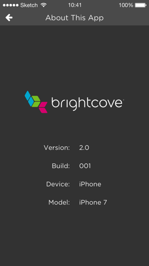

<style media="screen">
.small_image p {
  color: red;
}
</style>

<article class="bcls-article">

  <h1>Creating Your Application Design</h1>
  <summary>In this topic, you will answer a series of questions, recording answers in a spreadsheet, that will lead you to the look of your Brightcove Beacon Experience application design.</summary>
  <section class="bcls-section">
    <h2 id="Introduction">Introduction</h2>
    <p>This document will lead you through a series of questions about how you want the layout of your Brightcove Beacon Experience to appear. The result of answering these questions will help you build your application design for the Brightcove
      Beacon Experience. A very
      simple example of what you want to have defined for your app is pictured here:</p>
    <figure class="bcls-figure">
      
    </figure>
    <p>You may not have experience in designing a UX for an OTT app. In the last section of this doc, <a href="Is_there_guidance">Is there guidance?</a>, a list of vendors' advice is shown. You may wish to read and consider their guidance before
      designing your UI.</p>
  </section>

  <section class="bcls-section">
    <h2 id="Recording_your_categories/selections">Recording your categories/selections</h2>
    <p>You will record your decisions as you work through this document in a spreadsheet. To prepare the spreadsheet follow these steps:</p>
    <ol class="bcls-tasklist">
      <li>Download a template by clicking on this link: <a href="https://solutions.brightcove.com/bcls/bcbeacon/site-map.xlsx">site-map.xlsx</a>. Be sure to remember where it is saved.</li>
      <li>Open a blank spreadsheet from the Google Sheets app.</li>
      <li>From the Google Sheets menu select <strong>File > Import</strong>.</li>
      <li>From the dialog that appears, first choose <strong>Upload</strong> then click the <strong>Select a file from your device</strong> button, as shown here:
        <figure class="bcls-figure">
          
        </figure>
      </li>
      <li>Find the Excel file just downloaded, select it, then click <strong>Open</strong>.</li>
      <li>From the <strong>Import file</strong> dialog that appears, choose <strong>Replace spreadsheet</strong>, then click the <strong>Import data</strong> button.
        <figure class="bcls-figure">
          
        </figure>
      </li>
      <li>After the spreadsheet is imported you will see somthing similar to the following:
        <figure class="bcls-figure">
          
        </figure>
      </li>
    </ol>
    <p>In the spreadsheet you will record the answers to the questions in this document. Some of your entries will be freeform, while others will be selections from dropdown lists. For those
      with a dropdown list from which to select, answer the appropriate question.</p>
    <p>At the end of this process, you will share your completed Google Sheet with the Brightcove representative helping configure your experience.</p>
  </section>


  <section class="bcls-section">
    <h2 id="What_are_logical_categories_for_your_media_assets">What are logical categories for your videos?</h2>
    <p>For an effective presentation of your video assets you need to consider logical categories for those assets. The driving force behind the categories should be if your customers can find the videos they want logically and quickly.</p>
    <h3>Types of categories</h3>
    <p>You have two types of categories to choose from, they are:</p>
    <ul>
      <li>Manually Built: These are categories that you choose and to which videos are assigned via Video Cloud Studio playlists.</li>
      <li>Brightcove Beacon Automated: These are categories that Brightcove Beacon automatically creates. The three are: <em>Recently Watched</em>, <em>Most Watched</em> and <em>Favorites</em>. Further details are provided in the next section
        of this document.</li>
    </ul>
    <h3>Examples</h3>
    <p>Some examples are shown here to help focus on what it means to choose categories.</p>
    <p><strong>Example from Above</strong></p>
    <p>In the example above you see the categories are:</p>
    <ul>
      <li>Travel Channel</li>
      <li>The Cooking Channel</li>
      <li>Recommended for You</li>
      <li>Brightcove Library</li>
    </ul>
    <aside class="bcls-aside bcls-aside--information language-editable">The categories will always appear in uppercase in the actual UI.</aside>

    <p><strong>Movie Categories</strong></p>
    <p>Below are some of the categories, or genres, for movies taken from Wikipedia:</p>
    <ul>
      <li>Action</li>
      <li>Adventure</li>
      <li>Comedy</li>
      <li>Crime</li>
      <li>Drama</li>
      <li>Fantasy</li>
    </ul>
    <p>It may be genres work well as categories for your customers as categories. On the other hand, perhaps your customers have special interests, and the following would be more appropriate:</p>
    <ul>
      <li>Animated</li>
      <li>Film Noir</li>
      <li>Documentary</li>
      <li>Cult Classics</li>
      <li>Silent Films</li>
    </ul>

    <p><strong>College Athletics</strong></p>
    <p>It might be that the large quantity of categories at the top level. For instance, there are 347 Division 1 (generally large) schools. You could have the home screen of your app list all 347 schools, but some customers would most likely
      find that long list too scroll through a poor user experience. You can use sub-categories, or even sub-categories of sub-categories to make the search for a particular set of videos easier. The following displays a partial structure of
      possible categories for a college athletics site. Here the structure follows the <em>Conference -> School -> Sport</em> organizational structure:</p>
    <ul>
      <li>Southeastern Conference
        <ul>
          <li>Florida
            <ul>
              <li>Football</li>
              <li>Basketball</li>
              <li>Volleyball</li>
              <li>...</li>
            </ul>
          </li>
          <li>Georgia
            <ul>
              <li>Football</li>
              <li>Basketball</li>
              <li>Volleyball</li>
              <li>...</li>
            </ul>
          </li>
          <li>...</li>
        </ul>
      </li>
      <li>Pac-12 Conference
        <ul>
          <li>Arizona
            <ul>
              <li>Football</li>
              <li>Basketball</li>
              <li>Volleyball</li>
              <li>...</li>
            </ul>
          </li>
          <li>Oregon
            <ul>
              <li>Football</li>
              <li>Basketball</li>
              <li>Volleyball</li>
              <li>...</li>
            </ul>
          </li>
          <li>...</li>
        </ul>
      </li>
      <li>...</li>
    </ul>
    <p>If you believe the sport, rather than the conference, is most important to your customers you would maybe change the categorization to follow the <em>Sport -> Conference -> School</em> organizational structure.</p>
    <h3>Your Categories</h3>
    <p>From the examples you can see deciding on your categories and organization structure might be a straightforward, or very complex, task. You need to consider both your content, as well as your customers, for optimal design. It is
      imperative that you take time to think through your organizational structure and categories for your videos.</p>
    <h3>Record your categories</h3>
    <p>Now that you have determined your categories, you will enter them into the spreadsheet. Enter them IN THE ORDER IN WHICH YOU WANT THEM TO APPEAR in the app. In the spreadsheet, enter your ordered categories starting in cell B1, then B2,
      etc. A simple example appears as:</p>
    <figure class="bcls-figure">
      
    </figure>

  </section>

  <section class="bcls-section">
    <h2 id="What_Brightcove_Beacon_built_categories_do_you_want">What Brightcove Beacon built categories do you want?</h2>
    <p>Brightcove Beacon can provide three categories you can choose to include or not. They are:</p>
    <ul>
      <li>Recently Watch - The top 20 videos with the most recent bookmarks</li>
      <li>Most Watched - The top 20 based videos based on number of bookmarks</li>
      <li>Favorites - This category is dynamically built as customers mark video assets as a favorite</li>
    </ul>
    <p>Now add your desired Brightcove Beacon to your categories list, in the position you desire them. Note that you may have to use the menu commands <strong>Insert > Row above</strong> and/or <strong>Insert > Row below</strong> to make room
      for your additions. The altered example could appear as:</p>
    <figure class="bcls-figure">
      
    </figure>

  </section>

  <section class="bcls-section">
    <h2 id="Do_you_want_to_feature_a_video_or_videos">Do you want to feature a video or videos?</h2>
    <p>You can feature a video or a set of videos. The featured video(s) appear at the top of your app. Here you see an app with a set of five videos featured (you can tell the number of videos by the dots below the carousel):</p>
    <figure class="bcls-figure">
      
    </figure>
    <p>In the spreadsheet, locate the <strong>What do you want featured, if anything?</strong> cell. In the cell to the right of that question detail what you would like featured, if anything.</p>
  </section>

  <section class="bcls-section">
    <h2 id="Choosing_site_layout_options">Choosing site layout options</h2>
    <p>The following provide layout options for different parts of your app.The images shown, and from which you will choose your preference, are from a mobile app. Of course, the screens for TV or web will look slightly different. For instance,
      shown first below is a movie details screen from a mobile app, followed by the same movie details screen from the Apple TV app.</p>
    <figure class="bcls-figure">
      
    </figure>
    <figure class="bcls-figure">
      
    </figure>

    <p>Now it is your time to start choosing options. The following provide layout options for different parts of your app. Review the options for the particular layout, then record your selection in the spreadsheet.</p>

    <h3>Landing page</h3>
    <p>The landing page is optional. If you wish to have a landing page choose your layout, otherwise choose <strong>None</strong>. Note, there is no landing page on the web app.</p>
    <div class="small_image">
      <p>Landing A</p>
      
    </div>

    <div class="small_image">
      <p>Landing Carousel</p>
      
    </div>

    <h3>Movie details page</h3>
    <p>The movie details page displays details for a particular movie, and a list of related movies.</p>

    <div class="small_image">
      <p>Movie Details A</p>
      
    </div>

    <div class="small_image">
      <p>Movie Details F</p>
      
    </div>

    <div class="small_image">
      <p>Movie Details G</p>
      
    </div>

    <div class="small_image">
      <p>Movie Details H</p>
      
    </div>


    <h3>Series details page</h3>
    <p>The series details page displays details for a particular series, and a list of related movies.</p>

    <div class="small_image">
      <p>Series Details A</p>
      
    </div>

    <div class="small_image">
      <p>Series Details F</p>
      
    </div>

    <div class="small_image">
      <p>Series Details G</p>
      
    </div>

    <div class="small_image">
      <p>Series Details H</p>
      
    </div>

    <h3>Live TV</h3>
    <p>The customer can check what is playing now and what will play next on the selected channel.</p>

    <div class="small_image">
      <p>Live TV D</p>
      
    </div>
    <div class="small_image">
      <p>Live TV E</p>
      
    </div>

    <h3>Player</h3>
    <p>The player controls appear different, as well as other videos in the series, if any.</p>

    <div class="small_image">
      <p>Player A</p>
      
    </div>

    <div class="small_image">
      <p>Player B</p>
      
    </div>

    <div class="small_image">
      <p>Player C</p>
      
    </div>

    <div class="small_image">
      <p>Player D</p>
      
    </div>

    <h3>Live TV Player</h3>
    <p>Player used when live TV is playing.</p>

    <div class="small_image">
      <p>Live Player A</p>
      
    </div>

    <div class="small_image">
      <p>Live Player B</p>
      
    </div>

    <div class="small_image">
      <p>Live Player D</p>
      
    </div>

    <h3>Customer Settings</h3>
    <p>Displays the customers' settings options.</p>

    <div class="small_image">
      <p>Settings A</p>
      
    </div>

    <div class="small_image">
      <p>Settings Carousel</p>
      
    </div>

    <div class="small_image">
      <p>Settings Grid</p>
      
    </div>
  </section>

  <section class="bcls-section">
    <h2 id="Optional_items">Optional items</h2>
    <p>In this section you will decide if you wish to include some optional items. In the spreadsheet you will answer with <strong>Yes/No</strong>.</p>

    <h3>Rating popup</h3>
    <p>Determine if you wish to use a rating popup..</p>

    <div class="small_image">
      
    </div>

    <h3>More Info popup</h3>
    <p>Determine if you wish to use a More Info popup.</p>

    <div class="small_image">
      
    </div>

    <h3>About screen</h3>
    <p>Determine if you wish to use an About screen.</p>

    <div class="small_image">
      
    </div>

  </section>

  <!-- TEMPLATE
        <h3>Title</h3>
        <p></p>

        <div class="image_display">
          <p>img</p>
          
        </div>
        END TEMPLATE -->


  <section class="bcls-section">
    <h2 id="Is_there_guidance">Is guidance available?</h2>
    <p>UX design is a complicated matter, and you may wish to see what others consider when building a design. The following are links to some of the major OTT players advice on design and best practices.</p>
    <ul>
      <li>Roku: <a href="https://developer.roku.com/docs/developer-program/design/best-practices.md">Design Best Practices</a></li>
      <li>Apple TV: <a href="https://developer.apple.com/design/human-interface-guidelines/tvos/overview/themes/">Human Interface Guidelines</a></li>
      <li>Fire TV: <a href="https://developer.amazon.com/docs/fire-tv/design-and-user-experience-guidelines.html">Design and User Experience Guidelines</a></li>
      <li>Android TV: <a href="https://developer.android.com/design/tv">Design for Android TV</a></li>
    </ul>
  </section>

</article>
